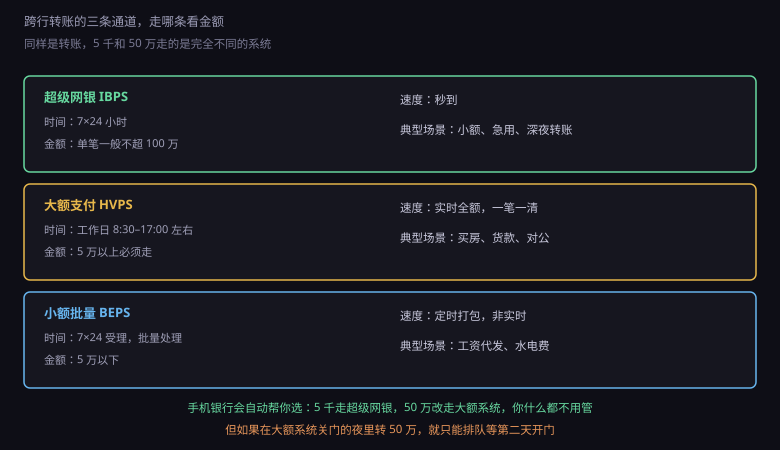
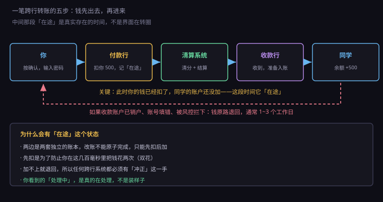
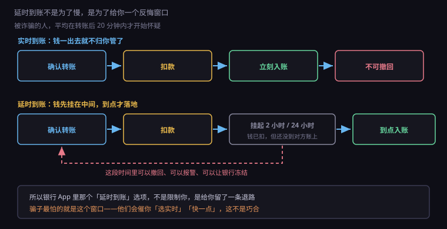

约 0.32 万字 · 3 张图 · 同样是转账，5 千秒到、50 万要等第二天，原因在通道
先分清一件事：你在手机上看到的"转账成功"，和你朋友账户里的"钱到了"，是两件事。
"转账成功"只代表你的银行接受了这个指令、并且从你账上扣了钱。 钱能不能进对方账户，取决于后面的清算通道有没有开门、通不通。
所以转账这件事，本质上是一次跨机构的消息投递： 你的银行发一条消息出去，对方银行收到后照着入账。 消息走得快，就秒到；消息要排队，就得等。
那为什么不干脆全部做成一秒到？ 因为通道的设计目标不一样：有的追求快，有的追求便宜，有的追求金额大。 一个系统同时满足三者，成本会高到没人用。
中国目前的跨行转账，主要走三条路。

超级网银（IBPS，网上支付跨行清算系统）。 2010 年上线，7×24 小时运行，单笔一般在 100 万以内，秒级到账。 你日常给人转几百几千，走的都是它。它的出现改变了中国转账的体验—— 在它之前，跨行转账是"工作日、几小时、还可能失败"。
大额支付系统（HVPS）。实时、全额、逐笔。 金额大的必须走它，因为只有它能提供"这一笔立刻、完整、不可撤销地到账"的保证。 但它在工作日运行，有固定的开关门时间，夜里和节假日不开。
小额批量支付系统（BEPS）。5 万以下的交易，攒一批算一次。 工资代发、水电煤代扣、社保发放，走的都是它。 它是 7×24 受理，但处理是定时的，所以不保证秒到。
你在手机银行里转账时，App 会根据金额和收款行自动选择通道， 这个过程你完全看不见。但它决定了你朋友什么时候听到那声提示音。
所以有个很典型的场景：晚上十点转 50 万，界面显示"已受理，次日处理"。 不是银行偷懒，是大额系统已经关门了，这笔钱只能排队等第二天开门再走。 转到一半的钱在系统里挂着，谁也不能动。
一笔跨行转账，无论走哪条通道，骨架都是五步。

第一步，你按下确认。 App 校验密码、限额、收款信息格式，然后生成一条转账指令。
第二步，付款行扣你的钱。 注意这里是真的扣，不是冻结。你的余额立刻减少， 同时系统里多了一条状态为"在途"的记录。
第三步，清算系统转接。 付款行把指令发给清算系统，清算系统核对、清分、把净额结算掉， 然后把"该给谁多少钱"的消息投递给收款行。
第四步，收款行入账。 收款行收到消息，验证收款账号存在、状态正常，然后把钱加到对方账户上。
第五步，状态回传。 成功或失败的结果原路返回，你的 App 上那条"处理中"才会变成"已到账"。
这五步里，第三到第四步之间是真正的时间黑洞。 快的时候几十毫秒，慢的时候几个小时——取决于通道、时间、对方银行的系统状态。
有人会问：为什么不设计成"确认后就同时改两个账户"，一步到位？
因为这两个账户在两台不同的机器上，中间隔着网络。 而网络会断、会慢、会重发。
假设我们设计成"同时改"：付款行扣款成功后，发消息给收款行加钱。 如果这条消息在路上丢了，付款行不知道，收款行也不知道， 钱就从系统里蒸发了。 如果消息重发了两次，收款行加了两遍，钱就凭空多出来一份。
这就是分布式系统里最经典的问题，叫一致性。 在没有可靠事务的前提下，唯一安全的做法是： 先在一个地方把状态定下来（扣款），再让另一个地方去追这个状态（加钱）。
为了让"追"这件事可靠，系统用了三招：
一是每笔转账有唯一流水号。 重发的时候，收款行看到同一个号，就知道是重复的，直接丢弃。
二是状态机。 一笔转账只能沿着"待处理 → 已扣款 → 已发送 → 已入账"这个顺序走， 不能跳步、不能倒退。状态机让任何异常都能被定位到具体阶段。
三是冲正。 如果最后确认失败，就反向操作一次，把扣掉的钱加回去。 冲正本身也可能失败，所以还要有对账兜底—— 夜里跑批的时候，把所有"在途"超过一定时间的记录挑出来，人工核对。
你在银行 App 里看到"处理中"能挂好几个小时，就是这套机制在工作： 它在等一个确定的答复。宁可慢，也不能错。
转账时要填三个东西：收款行、账号、户名。 现在很多 App 只让你填账号，户名自动带出来，但校验逻辑没变。
收款行决定走哪条通道、把消息投给谁。 填错了行，钱会进到别的银行，然后被退回。
账号是主键。银行系统里查账户就是按这个查的， 查不到就是查不到，没有任何模糊匹配的余地。
户名是最后一道校验。很多系统要求户名和账号必须匹配， 不匹配就拒绝。这条规则挡住了一大批转错账的事故—— 你输错一位账号，恰好是别人的卡，但户名对不上，钱就退回来了。
顺带说一个细节：银行账号里的数字不是随便排的。 它通常包含行号前缀 + 账户序号 + 校验位， 校验位的作用和信用卡的 Luhn 一样，用来在你输错一位时立刻发现。 所以你在 App 里输错一位，它往往当场就提示"账号格式不正确"， 而不是等到提交之后才失败。
现在还有一种更省事的转账方式：手机号转账。 你只填对方手机号，系统去一个中央数据库里查这个号绑了哪家银行的哪个账户。 这套服务叫"手机号码支付"，由清算机构统一维护。 它的好处是不用记一长串数字，代价是必须双方都开通了这项功能， 而且手机号必须是本人实名登记的那个。
所以如果有人跟你说"我换号了，以后转到这个新号"， 那多半不是转账方式的问题，是诈骗剧本的第一句。 手机号绑定的账户不会因为你收到一条短信就变。
这是最让人焦虑的问题：钱扣了，对方没收到，界面显示失败。
先说结论：钱不会消失，它一定在某个账户上，只是暂时不在你或者对方的可用余额里。
常见的失败原因有四种：
收款账户不存在或已销户。 收款行查不到账号，直接返回失败。钱退回付款行， 通常当天或次日回到你账上。
户名不匹配。 同上，退回。
收款账户状态异常。 比如被冻结、被列为涉案账户。这种情况钱会被挂起， 不退回也不入账，等有权机关处理。你可能要等很久，而且银行不会告诉你细节。
通道超时或系统故障。 最麻烦的一种。付款行发了消息，但没收到确认， 这时候钱处于"不确定"状态——可能到了，也可能没到。 系统会先挂着，等对账结果出来再决定退还是补。 这就是为什么客服总说"请等三个工作日"。
遇到这种情况，正确的做法不是反复重试（可能造成重复转账）， 而是先查交易流水号，再打客服报这个号。 流水号是这笔交易在系统里的唯一身份证，有了它，任何一方都能立刻定位。
银行 App 里有个选项叫"延时到账"，可以选 2 小时或 24 小时。 很多人觉得这是银行在拖时间，其实刚好相反。

实时到账的问题在于：不可撤销。 钱一进对方账户，那就是他的钱了，银行没有权力替你拿回来。 你只能去报警、去法院，走民事途径。
而电信诈骗的典型节奏是：受害人转账后 20 分钟内开始怀疑， 半小时内报警，一小时内钱被分散取走。 如果这中间有两小时的缓冲，警察和银行就来得及冻结。
所以延时到账的设计逻辑是：钱先扣、先挂在中间，到点才真正入账。 在挂起期间，你可以撤回，警察可以申请冻结， 收款方那边一分钱也拿不到。
这解释了一个很有意思的现象： 骗子在电话里总是催你"快点""选实时""别挂电话"。 他们怕的不是你犹豫，是怕你按下那个延时按钮。
现在很多银行对大额、异地、夜间转账默认就走延时， 或者至少弹一个提示让你确认。这不是刁难，是监管要求， 也是过去几年反诈实战里换来的经验。
最后说一个很多人不知道的变化：跨行转账以前是要收费的。
2016 年之前，柜台跨行转账按金额比例收费，几十块很常见； 网上银行便宜一些，手机银行再便宜一些。 那时候"手机银行转账免费"是银行拉新的卖点。
后来监管推动下，大部分银行把手机银行、网上银行的跨行转账手续费免了， 只保留柜台收费。原因很现实： 线上转账的边际成本几乎为零，柜面才有人工成本。 用价格把客户往线上赶，对银行和客户都是好事。
但免手续费不等于免费。这笔成本被银行消化在了别处： 你的活期存款利率低、账户管理费、短信通知费、理财产品的手续费。 金融产品很少有真正的"免费"，只有"在哪收"。
顺带提一句账户分类。现在一个人在同一家银行可以开三类账户： Ⅰ类是全功能账户，Ⅱ类有日 1 万、年 20 万的限额， Ⅲ类余额不能超过 2000 元。 这套分类的设计目的也是反诈和反洗钱—— 把大额资金流动收拢到实名最彻底的那一个账户上。